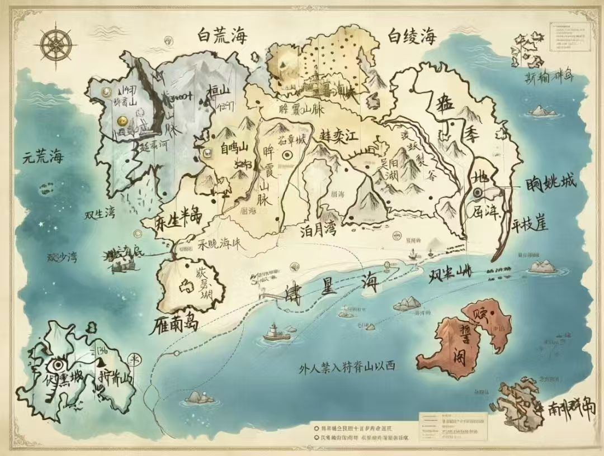

沧 陆
宏大政治玄幻史诗 · 四方博弈 · 神骸低语
在神骸遗迹之上建立的文明，终将面对它们付出的代价。
陆
之
印

四大城邦 · 四方文明
四种制度，四段宿命。选择一方文明，窥见沧陆的博弈棋局。
机密档案
档案馆依规程封存的部分条目——真相从不免费。点击解封，代价自负。
茹章城 · 繁荣的表象
沧陆公认最繁荣、最强大的文明中心，经济、文化、军事全面鼎盛……
恓鸟城 · 断脊山脉的另一面
官方记录称"戍边荣耀"——宗族培养体系之严苛，史家多有微词……
神骸 · 苏醒的预言
预言中，终有一日神会彻底苏醒，以它的规则重写整个世界的秩序……
权柄档案
四方文明由谁执掌？制度的齿轮咬合处，站着什么样的人。名录为未来纪事预留。
大长老
恓鸟城 · 最高首领
自宗族"崇明者"中选拔，须获民众认可方可上位；非终身制，年迈必退，失德可被民众联合推翻。
茹章君主
茹章城 · 神权集权
集宗教神权与军政大权于一身，自称君权神授；四部（社会/经济/外事/监察）以君主意志为轴运转，监察部可越过律法径行处置。
海商公会
眴姚港 · 共治议会
最大几支海商家族联合执掌政务，核心决策由议事会共同商议；名义朝贡茹章，实持极高自治。
执政团 · 参议团
伏熏岛 · 政团民主
每十年换届：执政团掌行政，参议团掌监督提案；参议团全员反对可废执政决议，提案多数同意即生效。
地理
记录大陆山河与文明边界
元荒、苍瀛、白绫、白荒、肆星——五大海域环绕陆块。断脊、眸霞两大主脉纵贯南北，自鸣山以五千二百四十三米冠绝沧陆。渡蛟裂谷撕裂东陆，东枝崖探入南溟。
点击探索沧陆地形全貌城邦
四方文明的权力棋局
恓鸟悲息，茹章伪盛，眴姚逐利，伏熏立衡。四大城邦，四种制度，四段宿命。从宗族长老到君主神权，从海商公会给政团民主——沧陆的政治光谱，远比你想象的复杂。
揭开四大城邦的真相秘境
神骸留下的异常领域
无昼碛——沙粒吸光，永无白昼，越深越暗，空间错乱。扼根山——绿洲中心的死寂孤峰，神骸沉睡的锚点。在这里，自然法则被扭曲，现实与虚妄的边界已然模糊。
踏入禁忌之地历法
记录时代更替的时间体系
祀元、戍城、衡历——三种纪元，同一片天空。十二个月，十二种命运：凛月戍边，烽月交兵，商月出海，烬月祭祀。时间在这里，不只是刻度，更是权力的刻度。
翻阅沧陆时间线纪年
被历史铭记的关键节点
幽荧降世，血祭封神。初代茹章王献祭自身，换来城邦的永恒繁荣——以全城世代寿命为代价。预言中，终有一日神会彻底苏醒，以它的规则重写整个世界的秩序。
血祭封神 · 预言终局势力
影响沧陆未来的力量
西境军邦与中部霸主长期对峙，东部港城左右逢源，南部海岛冷眼旁观。四方博弈，暗流涌动。而在这棋盘之上，还有一具沉睡的神骸，正缓缓苏醒。
洞察天下格局踏入这片天地，揭开世界的真相
地理志
一、海洋与水域
1. 大型海域
2. 海湾与海峡
3. 内陆湖泊
二、陆地单元
1. 主陆块
2. 半岛
3. 独立岛屿
4. 群岛与礁群
三、地形地貌
1. 主山脉
2. 山峰
3. 特殊地貌
四、河流水系
五、人文聚落
六、大型工程地标
城邦志
秘境志
历法志
沧陆各邦历法
（一）茹章城官方历法
官修正史（二）恓鸟城官方历法
军邦实录（三）眴姚城官方历法
商会文书（四）伏熏城官方历法
岛邦宪书历法换算器
祀元 ⇄ 戍城 ⇄ 衡历
沧陆通用月份名称
| 月份 | 时令与典故 |
|---|---|
| 1月 凛月 | 断脊山脉雪线最低，恓鸟城最苦寒的戍边月。 |
| 2月 融月 | 延西河、连奕江开始解冻，春汛初起。 |
| 3月 犁月 | 中部平原春耕，茹章城收粮税的起点。 |
| 4月 烽月 | 山雪化尽，恓鸟城与茹章城边境摩擦高发期。 |
| 5月 商月 | 肆星海风浪最小，眴姚城船队大规模出港的黄金季。 |
| 6月 霆月 | 雷雨频发，伏熏岛火山活动相对活跃的月份。 |
| 7月 灼月 | 全年最热，吴阳湖流域的农忙收割期。 |
| 8月 荒月 | 秋燥起，大陆东部时有小型旱情。 |
| 9月 狩月 | 白绫海北岸渔猎旺季，也是恓鸟城秋猎练兵月。 |
| 10月 敛月 | 百物收敛，各城邦清点一年库存、结算商账。 |
| 11月 霜月 | 初雪普降，眸霞山脉开始封山。 |
| 12月 烬月 | 年尾大祭，也是茹章城每三年一次秘密前往扼根山的出发月。 |
纪年志
茹章城纪元开端。官方史书称之为"幽荧降世"；民间隐秘传言则谓"血祭封神"——初代茹章王为换取城邦的强盛，将自己献祭，融入神的心脏，以全城邦世代居民的寿命为代价，换来了茹章城的永恒繁荣。诅咒自此而降：茹章城所有人，无论贵贱，都活不过45岁。
伏熏城邦统一，立衡法、定商事、规整匠艺，此年为建国之年，伏熏城官方历法"衡历"由此纪元。对应换算：衡历年份 = 祀元年份 − 160。
恓鸟建国，此年为恓鸟城官方历法"戍城年"之元年。对应换算：戍城年份 = 祀元年份 − 200 = 衡历年份 − 40。
每隔三年，茹章君主都会率领一支庞大的亲信队伍，于年尾烬月秘密远赴奇迤岛，深入扼根山腹地举行仪式。仪式全程严格保密，对外只宣称"祭天祈福"；唯有民间口耳相传：那是延续诅咒、供养神骸的献祭。
在寿命诅咒之下，茹章城每一代人皆以45年为限，民间私下用"一轮"指代一代人。官方以"删改围罪"清除所有知晓真相者，靠朝贡与扩张转移民众对寿命异常的注意力。强盛的表象之下，绝望在暗处无声蔓延。
预言中，终有一日神会彻底苏醒，以它的规则重写整个世界的秩序——届时，茹章城的"奇迹"将彻底崩塌，而沧陆的格局也将随之改写。
势力志
四方势力博弈关系
核心主线
茹章城以全城邦世代居民的寿命为代价换来的"永恒繁荣"，是沧陆最大的秘密：扼根山深处的灵祠里，沉睡着一具"不属于这个世界的神之遗骸"。神骸缓慢吞噬民众的生命余脉以维持城邦气运，全城无论贵贱都活不过45岁。
官方以"删改围罪"清除所有真相知晓者，靠朝贡与扩张转移注意力。但预言中，终有一日神会彻底苏醒，以它的规则重写整个世界的秩序——届时，茹章城的"奇迹"将彻底崩塌，而沧陆的格局也将随之改写。